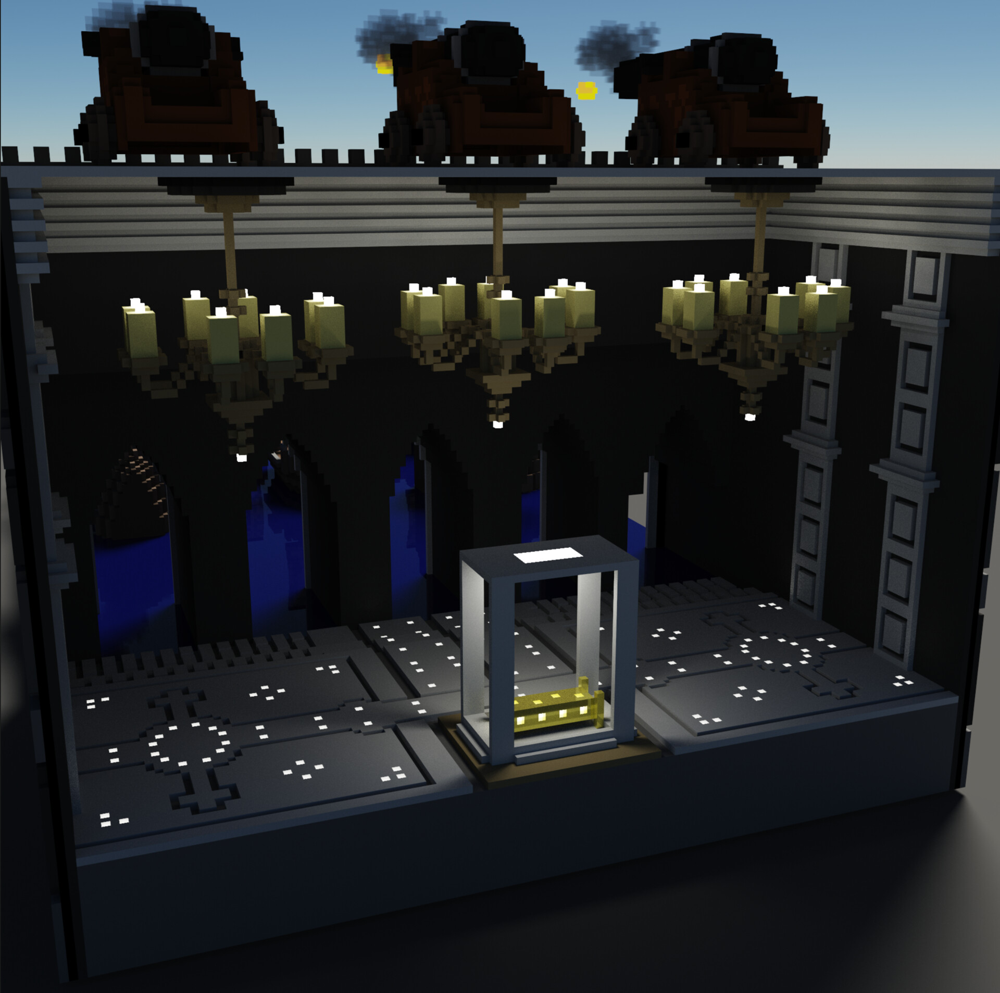

Recruiter / Hiring Manager
See my Experience section and LinkedIn (linked above).
Student
- If you're here from Skillshare, welcome!
- If you're here looking for my Skillshare course, use https://skl.sh/3VxfU4B to sign up for free. My course can be found here (published January 1, 2023)
- If you're not in 61A but found my site because you were Googling for premed course notes, the notes / practice questions I wrote for MCB 102, MCB 160, Chem 1A, and Chem 3A are below on this page.
- If you're in 61A, I no longer teach, but you can find some of my past YouTube walkthroughs on the 61A Departmental channel (sample link) and some past worksheets Sean and I wrote here: link
- Senior software engineer building experimentation infrastructure
DocuSign
- Infrastructure / Storage software engineer
- Built a cloud service to collect sensitive process dumps and ETW traces and provide secure, audited access. Worked primarily across the .NET / Azure tech stack
ThoughtSpot
- Engineering intern on the eNLite natural language processing team
- Worked on a patened NLP system and increased tests from 1,000 to 80,000 while reducing overall evaluation time by > 10-fold by improving caching / load balancing logic. Worked primarily with Python, Protobuf, Jenkins, Groovy, and C++.
UC Berkeley College of Engineering
- Undergraduate and graduate student instructor for CS 61A, which was named one of the top 5 computer science courses in the nation
- Recipient of the 2020 EECS Distinguished GSI Award, which is given to the top instructor out of ~700 in the department each year
- Consistently maintained one of the highest ratings in the EECS department from students across 8 semesters of teaching ~2000 students a semester.
Education
University of California, Berkeley
- Master's in Electrical Engineering and Computer Science
- Research focus in Artificial Intelligence / Machine Learning, specifically accelerated knowledge distillation
University of California, Berkeley
- Bachelor's in Computer Science
- Graduated with Highest Distinction / summa cum laude
Research
RISE Laboratory
- Worked on accelerated machine learning. Advised by Joseph Gonzalez
- Seventh author on ACC 2021 conference publication "CathAI: Fully Automated Coronary Angiography Interpretation and Stenosis Detection Using a Deep Learning-based Algorithmic Pipeline"
- Fifth author on pending journal manuscript "CathAI: Fully Automated Coronary Angiography Interpretation and Stenosis Detection Using a Deep Learning-based Algorithmic Pipeline"
- Freelance computer science educator making courses on Java.
- Use https://skl.sh/3VxfU4B to sign up for free. My course can be found here
Microsoft Imagine Cup
Part of Team Boomereang, which won second place in the US Imagine cup, advanced to World Finals out of 40,000+ entrants from 200+ countries, and won accolades for Big Data / IOT. See here: link 1, link 2, and link 3
USA Biology Olympiad
Semifinalist in the 2015 USABO competition (top 500 in the USA)
DuPont Challenge
One of 33 winners selected from a pool of 10,000+ international essay submissions
USA Swimming
- One of the fastest swimmers in the country for the 2009-2010 season. National age group rankings: 100 back (25th), 50 free (16th), 100 free (21st), 200 breast (25th)
- Represented the USA at the 2010 North American Challenge Cup
- Overall third-place finisher in the 2014 Navy SEAL Challenge
- 2015 American Short Course Championships finalist in the 100 backstroke
- 2x CIF champion in 2015 and 2016
Digital Art
I build 3D voxel art with MagicaVoxel.

Miscellaneous Work
Krossy Road Projects
I built a game for Bit By Bit, which focuses on children's Compuer Science education in underserved communities.
Sproul Survival Projects
Fight off a horde of never-ending flyer-ers on Sproul Plaza! I implemented the entire Physics engine from scratch.
ReVAS Projects
I built an app that extracts eye motion from scanning laser ophthalmoscope videos with Dr. Mehmet Agaoglu.
Sparse Coding Projects
An experiment exploring sparse coding and the decomposition of data with higher order structure.
Organic Chemistry Books
I wrote and compiled course notes for Chem 3A: Chemical Structure and Reactivity (with Professor Kurt Vollhardt).
General Chemistry Books
I wrote and compiled course notes for Chem 1A: General Chemistry (with Professor Martin Head-Gordon).
Molecular Neurobiology Books
I wrote and compiled course notes for the plasticity module of MCB 160: Molecular Neurobiology (with Dr. Helen Bateup).
Molecular Genetics Books
I wrote and compiled course notes for the genetics module of MCB 102 (with Professor Nicholas Ingolia).
Contact
Connect with me! If you'd like to talk, don't hesitate to reach out to me on LinkedIn!
 I built a game for Bit By Bit, which focuses on children's Compuer Science education in underserved communities.
I built a game for Bit By Bit, which focuses on children's Compuer Science education in underserved communities. Fight off a horde of never-ending flyer-ers on Sproul Plaza! I implemented the entire Physics engine from scratch.
Fight off a horde of never-ending flyer-ers on Sproul Plaza! I implemented the entire Physics engine from scratch. I built an app that extracts eye motion from scanning laser ophthalmoscope videos with Dr. Mehmet Agaoglu.
I built an app that extracts eye motion from scanning laser ophthalmoscope videos with Dr. Mehmet Agaoglu. I wrote and compiled course notes for Chem 3A: Chemical Structure and Reactivity (with Professor Kurt Vollhardt).
I wrote and compiled course notes for Chem 3A: Chemical Structure and Reactivity (with Professor Kurt Vollhardt). I wrote and compiled course notes for Chem 1A: General Chemistry (with Professor Martin Head-Gordon).
I wrote and compiled course notes for Chem 1A: General Chemistry (with Professor Martin Head-Gordon). I wrote and compiled course notes for the plasticity module of MCB 160: Molecular Neurobiology (with Dr. Helen Bateup).
I wrote and compiled course notes for the plasticity module of MCB 160: Molecular Neurobiology (with Dr. Helen Bateup).